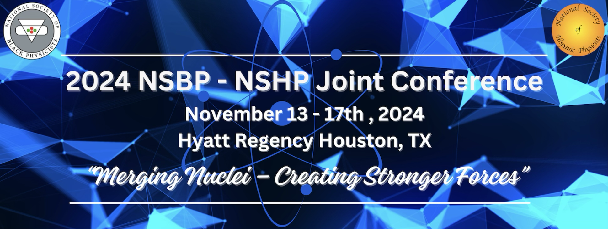
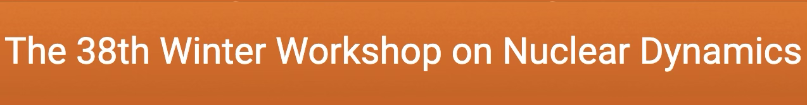

Lattice QCD-Based 3D-Ising Equation of State: Universal Behaviors Near the Critical Point
4D-TExS: A Novel 4D Lattice-based QCD EoS

Equation of State of Strong Interactions
3D-Ising Critical Point Mapped onto QCD EoS
Ising-TExS Module Update
Equation of State of Strong Interaction
Equation of State of Strong Interaction
Finite Density QCD EoS and T'-Expansion
QCD-based Equation of State at Finite Density with a Critical Point...
